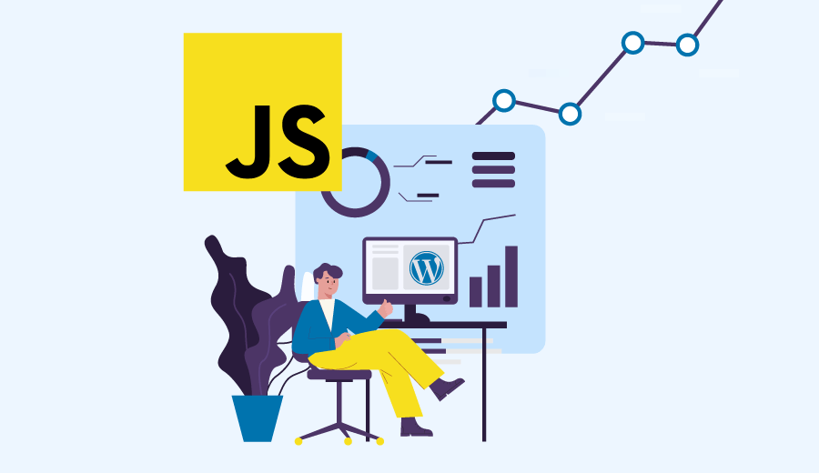
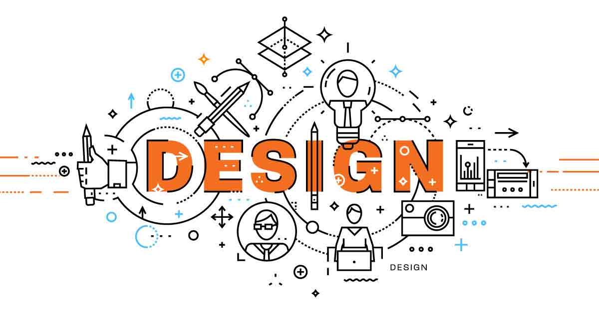
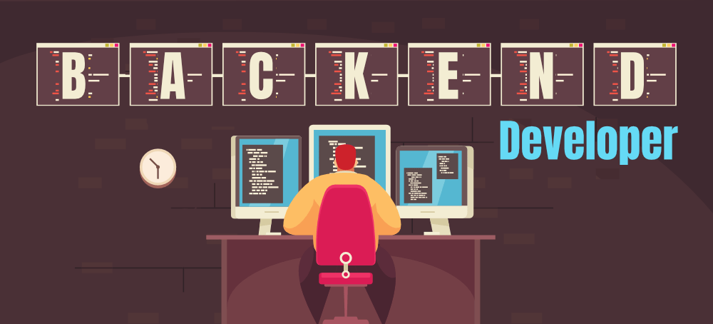
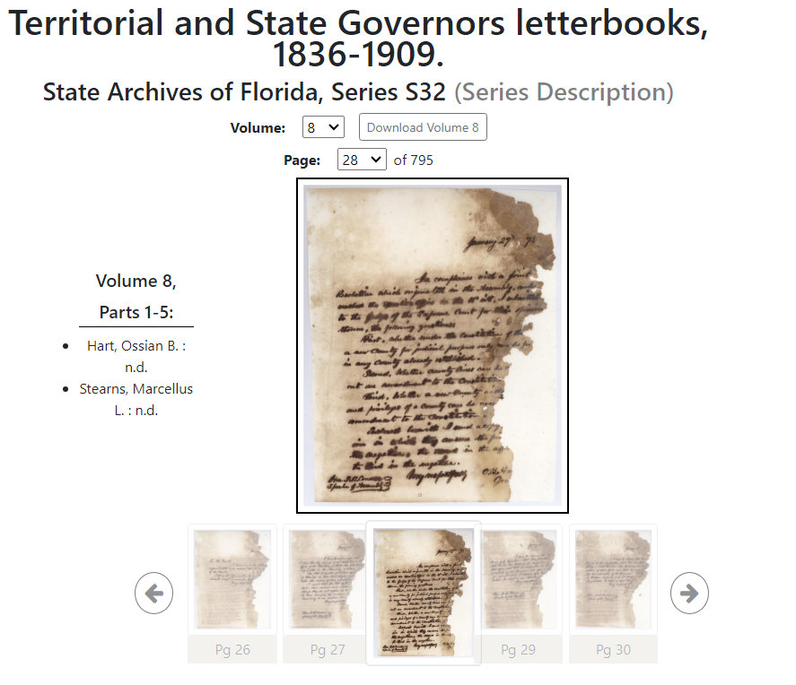
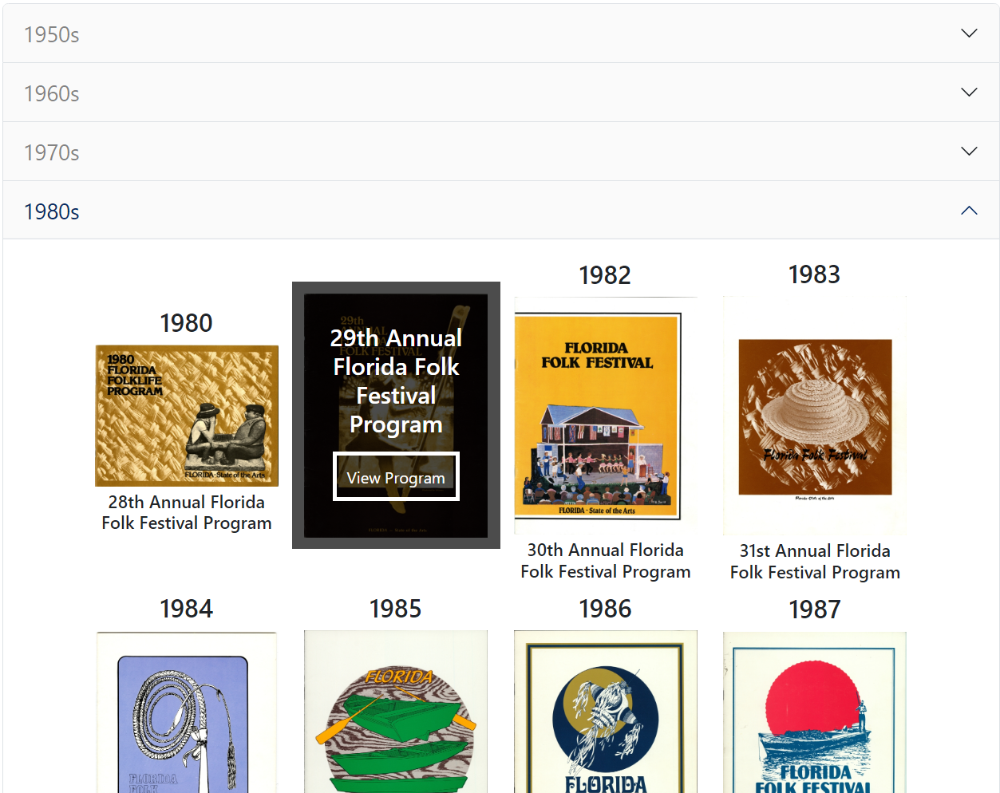

About Me:
.accordion-body, though the transition does limit overflow.

Javascript
Comfortable with Javascript and able to research and deploy as needed.
React
Currently studying react, but comfortable with fundamentals and able to deploy basic applications using best practices.

Responsive Design
Comfortable with Html, CSS, Bootstrap, front-end frameworks and best responsive design practices.

Backend
Currently studying command line basics and intend to learn about working with databases and setting up servers in the near future.





Hiring

Freelance
Projects

Collaboration
Non-profit
Anything else
Let's get in touch
Feel free to contact anytime and I'll get back as soon as I can.

2775 Gerald Dr. Tallahasee Fl. 32310

Admaloch91@gmail.com

678-687-8222